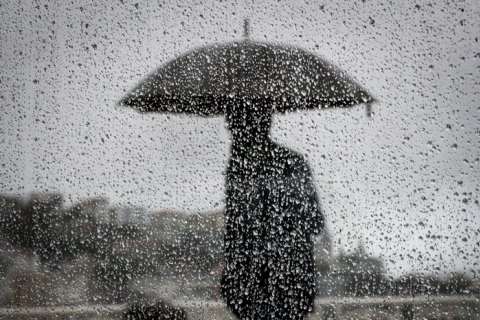

НОВИНИ

КПІ посів перше місце за популярністю серед українських ЗВО в інтернет-просторі
Рейтинг uniRank University Ranking покликаний допомогти студентам, викладачам та науковцям оцінити загальну популярність університету.
Прогнози вчених КПІ мають допомогти Україні у боротьбі з коронавірусом
Сценарії розвитку пандемії коронавірусу, що їх розробляє команда вчених проєкту «ФОРСАЙТ COVID-19» Світового центру даних «Геоінформатика і сталий розвиток» при КПІ ім. Ігоря Сікорського, допомагають дати відповідь на питання, як житимуть українці в умовах пандемії ближчі місяці, як зміниться світ і Україна після завершення пандемії, коли це може статися?
День науки – 2020
Проректор КПІ Віталій Пасічник – про науку в Україні та світі, перспективи її розвитку, стратегічні завдання університету. Третя неділя травня в Україні присвячена Науці. Так триває з 1997 року, згідно з відповідним Указом Президента. У цей день вшановують науковців, видатні досягнення та відкриття. Крім того, це нагода поговорити про теперішній стан науки і її перспективи. Щоб бути конкурентоспроможними на сучасному ринку, необхідно виховувати молоде інноваційне покоління вчених, інтегрувавши науку та освіту.
У КПІ преміювали вчених за публікації у Scopus та Web of Science
Загалом премійовано 345 науково-педагогічних працівників і 17 науковців, а загальний фонд премій становить 700 тисяч гривень. Мінімальна сума премії авторам за публікаційну активність становитиме 500 грн, максимальна – обмежена сумою 15 тис. грн. Мінімальну суму премії отримають 141 автор, максимальну – 4.

Факультету соціології і права – 25!
ФСП – як інноваційний освітній підрозділ європейського рівня – відомий уже не тільки в Україні, а й за кордоном. Тут навчаються амбітні талановиті люди, які змінюватимуть Україну на краще.

Вітаємо з Днем пам’яті та примирення і Днем перемоги над нацизмом у Другій світовій війні!
Дорогі ветерани та нинішні захисники Вітчизни! Шановні політехніки! Сьогодні ми з гордістю вшановуємо людей старшого покоління, яким випало пройти крізь смертельний вогонь Другої світової війни. Ми по праву пишаємося звитяжним внеском наших предків у спільну перемогу над нацизмом Антигітлерівської коаліції.

Теплоенергетичний факультет КПІ ім. Ігоря Сікорського
Теплоенергетичний факультет (ТЕФ) – один з найстаріших факультетів Київської політехніки. Тут готують найкращих фахівців з теплоенергетики, атомної енергетики, комп’ютерних наук, автоматизації та комп'ютерно-інтегрованих технологій. ТЕФ приділяє значну увагу впровадженню сучасних технологій і методів навчання. Тож освіта, яку ви отримаєте на факультеті, допоможе стати затребуваними фахівцями не тільки в Україні, а й в усьому світі.
Сьогодні
COVID-19

Коронавірус починає відступати. Суденти все ще сидять на карантині. Сподіваємось на дистанційну сессію, тому-що Владіміров бум-бум.
Сессія

Група ТІ-91 буде здавати на цій сессії цілих 3 екзамени! Вища математика, основи програмування, архітектура комп'ютера.
Хмм...

Цей сайт написала людина, що ще до першого вересня навіть не знала, як влаштований сайт і як його роблять.
ПОГОДА
Погода похмура. Місцями дощі у вигляді сліз відрахованих студентів.